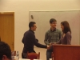
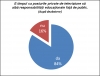
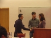
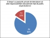

{kind=link}
 Introducere Moderator - George Jiglau
Introducere Moderator - George Jiglau
 Discurs Afirmator 1 - Dan Chertes
Discurs Afirmator 1 - Dan Chertes
 Cross 1
Cross 1
 Discurs Negator 1 - Vlad VIdican
Discurs Negator 1 - Vlad VIdican
 Cross 2
Cross 2
 Discurs Afirmator 2 - Andreea Chis
Discurs Afirmator 2 - Andreea Chis
 Discurs Negator 2 - Ioana Georgescu


Discurs Negator 2 - Ioana Georgescu


{kind=link}
{kind=link}
{kind=link}
{kind=link}
{kind=link}
{kind=link}
{kind=link}
{kind=link}
Cluj Napoca, 14 decembrie Aula FSEGA
Echipa Afirmatoare: Dan Chertes – avocat si Andreea Chis – judecator si profesor
Echipa Negatoare: Vlad Vidican si Ioana Georgescu – studenti facultatea de Drept
moderator: George Jiglau-Labunet - jurnalist
Dan Cherteş (Afirmator 1)
Ne-am decis ca pentru prezentarea argumentelor noastre pro să facem o abordare care probabil o să vi se pară un pic atipică. Ce înseamnă asta? Inseamnă că noi anticipăm care ar fi argumentul principal al adversarilor, al celor cu opinie contra moţiunii. Care ar fi argumentul acesta? Tot timpul când se discută despre acest subiect, primul argument care se consideră principal şi cel mai important este faptul că televiziunile private, mai exact termenul de privat din această formulare este suficient ca şi contraargument la faptul că acestora ar trebui să li se impună ceva anume. La momentul în care discutăm, cel puţin în opinia noastră, dacă discutăm de asumarea unui rol de educaţie al televiziunii, bineînţeles că rolul acesta televiziunile nu si-l vor asuma din punct de vedere moral, nu fiindcă finanţatorii televiziunilor nu are avea această latură morala ci fiindcă [după cum ştiţi foarte bine], ceea ce se vinde foarte bine în România, [pentru că presupun că tema dezbaterii se raporteaza la acest teritoriu], este latura imorala. Scandaluri, cine pe cine a pălmuit, a înşelat şi aşa mai departe, cunoaşteţi. Prin urmare, discuţia pleacă de la termenul de privat.
Întrebarea noastră este: putem pune semnul egal între noţiunea de privat şi noţiunea de a face orice, bineînţeles raportat la televiziuni? Majoritatea ar spune da. De ce? Sunt banii mei şi fac ce vreau cu ei. Investesc, respectiv dau publicului ceea ce consider eu că se vinde, chiar dacă acest material oferit publicului nu este unul educaţional sau este mai degraba o educaţie negativă, ca să spun aşa.
În opinia noastră, acest semn egal între termenul privat şi definiţia pe care v-am dat-o se poate pune cu o anumită corectură, si anume „poţi să faci ce vrei în domeniul privat atâta timp cât respecţi nişte reguli” .De ce zic asta, [stiti asta, trăiţi în societatea de azi, nu trăiţi în epoca de piatră], regulile acestea ne ajută să convieţuim unii cu alţii. În opinia noastră, regulile după care ar trebui să se ghideze televiziunile sunt stabilite de interesul general. Ce e interesul general, fiindcă se vorbeşte foarte des de anumite noţiuni, a se vedea discursurile politice, pe care lumea nu le poate simţi, nu le poate palpa. Ca să lămurim acest termen, respectiv interes general este foarte simplu: conjugăm toate interesele individuale. Asta puteţi să vă daţi seama ce e, pentru că pentru fiecare, interes individual înseamnă un cumul de dorinţe, aspiraţii ş.a.m.d. Interesul general nu e compus din interesele individuale puse unul peste altul, ci sunt interconectate. Şi acum ajung la estenţa discuţiei, raportat la interesul individual. Este în interesul individual al fiecaruia [dintre noi] educaţia? În mod sigur da. Probabil că şi pe ciobanul de pe câmp dacă îl întrebaţi, va zice: „Da, aş fi vrut să merg la şcoală dar ai mei nu au avut bani”. De ce? Pentru că educaţia îti aduce bani, îţi aduce cunoştinţe multe din punct de vedere intelectual, îţi aduce o grămadă de chestii.
Sub acest aspect, ce face educaţia? Te ajută să înţelegi lumea, adică nu rămâi ignorant. Ştiţi ce rele poate să producă ignoranţa. Mai mult, inveţi cum să te susţii singur, înveţi o meserie, din nou un argument că educaţia este benefică. Mai mult, şi cu asta închei, te ajută şi din punct de vedere a relaxării. Relaxarea este o componentă importantă a persoanei. În momentul în care cunoşti că există alte locuri de relaxare, nu eşti limitat la comunitatea în care trăieşti, în care pot să existe metode de relaxare care te plictisesc, poţi să te relaxezi în alte locuri. Prin urmare, însumând aceste beneficii ale educaţiei, putem trage concluzia ca educaţia este un beneficiu şi fiind un beneficiu, deci o chestie bună, televiziunile ar trebui să-şi asume această latură, respectiv să educe publicul.
Cross1
George Jiglău: Dacă cei doi reprezentanţi ai Negatorilor au întrebari la primul discurs?
Ioana Georgescu: Aş avea eu câteva întrebări. O primă întrebare către domnul Cherteş este dacă televizorul te poate învăţa să ai o meserie, poate lua rolul educaţiei pe care o oferă alte instituţii?
Dan Cherteş: Din nou, chestie de procedură, se poate răspunde de către oricare?
George Jiglău: Da, sigur.
Andreea Chiş: Eu cred ca nu este vorba de a sublini rolul unui profesor, ci a deschide apetitul pentru educaţie.
Ioana Georgescu: Ok, şi de ce am avea nevoie de această deschidere a apetitului la ora actuală?
Andreea Chiş: Am văzut de exemplu un spot publicitar recent cu vedete cum ar fi Horia Brenciu, despre rolul şcolii: „Dacă ştii un copil care are nevoie de ajutor, ajută-l să meargă la şcoală”. Iată rolul televiziunii. Este adevărat că era televiziunea publică care facea acest lucru, dar îndeamnă toţi parinţii să-şi dea părinţii la şcoală. Este un rol în a educa.
Ioana Georgescu: Am înţeles. La ora actuală există posturi care încearcă să atingă acest segment al educaţiei în afară de televiziunea publică?
Andreea Chiş: Foarte puţine, cred. Eu am văzut, ca să vă dau un exemplu, pe Pro Cinema este Cinemateca, introdusă de o scurtă prezentare a lui Cristian Tudor Popescu. Este un bun început. Educi gustul publicului pentru un anume tip de filme. Spui câteva lucruri: care este regizorul, care este background-ul, cine sunt actorii, de ce este important şi la ce trebuie să te uiţi când urmăreşti un film. Eu cred ca este prea puţin. Am văzut emisiuni despre cărţi pe canalele comerciale. Am văzut, e adevărat, emisiuni culinare de exemplu. Nu este tot una daca se prezintă o simplă reţetă sau se prezintă culturi în ale mâncării şi iată, deja am avut un rol în educaţia nu numai a tinerei generaţii ci a publicului care ne urmăreşte în general.
Ioana Georgescu: Şi de ce credeţi că televiziunile private nu sunt interesate de mai multe emisiuni de acest gen?
Andreea Chiş: Eu cred ca ar fi interesate, dar nu sunt conştiente de acest interes. Ele cred ca se vinde numai ce este comercial, numai ce este scandal, dar în realitate eu cred ca s-ar vinde orice, depinde de forma în care îmbraci acel „ceva”. Gândiţi-vă la profesorii voştri din facultate, [vă dau acest exemplu pentru că sunteţi studenti], o să vedeţi dacă îi urmăriţi că sunt profesori care aparent sunt extrem de seci, dar când urmăreşti cursul vei constata că este plin de substanţă; alţii, care aparent sunt extrem de spectaculoşi, când vei încerca să înveţi cursul pe care ţi l-ai notat, vei constata că nu ţi-a transmis nimic. Deci iată în această formulă, pot inclusiv să păcăleasca publicul şi să îmbrace o chestiune care aparent nu place într-o formă atât de frumoasă astfel încât să o faca atractivă.
Ioana Georgescu: Vă mulţumesc.
Vlad Vidican: Am şi eu o întrebare, după care voi trece la discursul meu.
Ştefan Strilciuc: Aţi depăşit timpul alocat întrebărilor.
Vlad Vidican (Negator 1)
Ok, o să încep în primul rând cu a vă saluta. Chiar dacă sunteţi un public mai mic, sunteţi unul călduros şi vă felicit că vă aflaţi aici. Acum să încep cu întrebarea retorică pe care voiam să o pun echipei Afirmatoare şi anume dacă în viziune ei această măsură, acest rol în educaţie pe care ar trebui să îl aibă televiziunea ar putea să fie şi ar trebui să fie reglementat din punct de vedere legislativ. Rog următorul vorbitor să ne răspundă la această întrebare.
Acum, să trec la substanţa pozitivă şi să vă explic de ce televiziunea nu ar trebui să aiba un rol în educaţie mai mult decât îl are acum şi mai ales nu ar trebui să aibă un rol în educaţie reglementat de public. Exact aşa cum a zis antevorbitorul meu, niciodată publicul nu ar trebui să se „bage” peste privat, decât într-o oarecare măsură, în limita bunului simţ. Şi atunci, lucrul acesta mă duce în continuare la cele două puncte ale discursului meu şi anume: de ce trebuie publicul niciodată să se întindă prea mult peste privat şi în al doilea rând de ce televiziunile private nu sunt în măsură si nu trebuie să facă această educaţie.
In primul şi în primul rând, este libertatea televiziunilor private să aleagă ce vor ele să difuzeze. După cum bine ştim, şi astăzi avem televiziuni care se axează pe emisiuni educative şi televiziuni care se axează pe alt gen de public. Atunci dacă privim ce sunt aceste televiziuni private, ele sunt nişte companii, isi urmăresc interesul. Ca orice companie, televiziunile se muleaza după publicul lor, nu invers. Aşadar, dacă televiziunile văd că publicul vrea să vadă sau vrea să asculte un gen de muzică sau alt gen de muzică, pentru a avea profit, vor difuza acest tip de program.
Pe de altă parte, există bineînţeles şi emisiuni şi televiziuni care transmit şi se axează mai mult pe emisiuni culturale. Mai mult decât atât, ca să vă arăt că nu există nici o problemă în ceea ce priveşte educaţia momentan, mai avem şi televiziunea publica, finanţată de către stat şi a cărei rol principal este acela de a educa populaţia prin emisiunile pe care le difuzează şi atunci problema este rezolvata. Dacă încercăm să facem acest lucru, şi atunci vine al doilea punct al discursului meu, dacă încercăm să facem acest lucru, riscăm să facem mai mult rău decât bine. De ce spun acest lucru? Pentru că televiziunile private, dacă le obligăm să difuzeze şi să se exeze mai mult pe programe culturale care nu le aduc profit şi care trec practic peste rolul educativ şi educaţia cum o privim noi, atunci avem o mare problemă. Din ce puncte de vedere? Pentru că: dacă sesizăm probleme la nivel de cultură a unei populaţii, acea problemă este una la nivel educaţional. Ştim că România se confruntă cu foarte multe probleme la nivelul sistemului educaţional. Fiecare guvern care vine, încearcă să aducă ceva nou, să schimbe, să facă o reformă, pentru că ne dăm seama că sistemul educaţional, mai ales învăţământul preuniversitar este deficitar şi ar trebui schimbat ceva. Şi dacă noi sesizăm o problemă, aceasta nu este problema televiziunilor private ci este o problemă a statului şi în special o problema sistemului educaţional şi acolo ar trebui să ne axăm.
În al doilea rând, din păcate, 95% din populaţia României îşi petrece timpul liber, poate nu în mod surprinzător în faţa televizorului. Atunci, dacă noi îi dăm televiziunii un rol în educaţia populaţiei, şi ştim foarte bine că din acea 95% populaţie foarte mulţi sunt copii şi daca noi dăm acest rol de a educa populaţia televiziunii, riscăm ca părinţii care şi acum ăşi lasă şi îşi uită copiii în faţa televizoarelor, să fie şi mai încurajaţi de către stat să îşi uite în continuare copiii în faţa televizoarelor cu gândul că televiziunea şi-a asumat oricum acest rol în educarea copiilor şi a populaţiei în general şi ar trebui ca educaţia să fie făcută de către televizor. Să ne aducem aminte de campaniile de acum un an care au fost iniţiate de CNA cu titlul „Nu-ţi uita copilul în faţa televizorului”.
Pe de altă parte, încă un singur punct în discursul meu, acest lucru nici nu se poate implementa. Dacă încercăm să dăm o lege în urma căreia fiecare televiziune să aibă un anumit număr de ore cu conţinut educaţional, cum s-a mai încercat în alte ţări, acest lucru s-a văzut că nu se poate implementa. Haideţi să ne gândim cum pe Taraf TV, la un moment dat, la o anumită oră, se vor termina manelele şi va intra „educaţional”. Sau, pe de altă parte, să ne uităm la Sport.ro sau la orice canal, după ce îl vedem pe Hagi ce a mai făcut şi Gigi Becali cu cine s-a mai certat, din nou „programe educaţionale”.
Aşadar, în urma celor spuse, nu ar trebui ca acest televiziuni private să îşi asume un rol în educaţie, în primul rând pentru că nu sunt în stare, nu este benefic pentru noi să facă acest lucru şi pentru că nici nu există o problemă [aici].
Vă mulţumesc.
Cross 2
George Jiglău: Mulţumim lui Vlad Vidican. Dacă există întrebări din partea echipei Afirmatoare?
Dan Cherteş: Eu am o singură întrebare. Se afirmă că exista televiziuni private educaţionale.
Vlad Vidican: Da, cu conţinut educaţional.
Dan Cherteş: Exact. Întrebarea mea e următoarea: deci televiziunile private îşi pot sau nu asuma rolul de televiziuni educaţionale?
Vlad Vidican: Dacă televiziunile private se axează doar pe un conţinut educaţional, într-o oarecare măsură da, îşi pot asuma acest rol.
Andreea Chiş: Aş avea şi eu o întrebare. Aţi spus că televiziunile comerciale trebuie să se muleze după gustul publicului şi să transmită emisiuni care să fie pe gustul publicului. Ce credeţi, acest gust poate sau nu fi educat?
Vlad Vidican: Da, poate fi educat, dar nu de către televizor.
Andreea Chiş: Întrebarea logică este atunci de către cine?
Vlad Vidican: Poate de către familie, de către sistemul educaţional, să conştientizeze oamenii, dar lucrul ăsta nu poate fi făcut prin televizor, pentru că televiziunile sunt un organism care se mulează pe cerinţele publicului nu invers.
George Jiglău: Doamna Andreea Chiş, al doilea discurs afirmator.
Andreea Chiş (Afirmator 2)
Mărturisesc că atunci când am auzit tema acestei dezbateri şi ascultându-i pe colegii mei mai tineri mi-am amintit un film pe care l-am văzut recent la cinematograf, se numeşte Free Rainer, este un film german. Free, acestă expresie se referă la eliberarea minţii, pentru că Rainer este conducătorul unui post privat de televiziune care transmite numai emisiuni pe care am putea să le numim junk-uri, fast-food pentru creier. El se trezeşte într-o zi, mort de beat şi drogat, încercând să se uite la propriile canale de televiziune, mută de pe un canal pe altul şi vede că nu are de ales decât între emisiuni despre sex, scandaluri şi bătăi, absolut pe toate canalele. Deci iată, publicul larg, ca şi Rainer, care vindea aceste emisiuni nu aveau de ales decât dintre aceste tipuri de emisiuni. Rainer disperat, părăseşte postul de televiziune şi se hotărăşte să facă o schimbare fundamentală în a educa gustul oamenilor. Ce face: încearcă să sparga sistemul de rating, ajunge în casele acelor familii care de fapt dau rating-urile. Falsificând rating-urile, dă rating-uri mari emisiunilor culturale. Ce spun televiziunile private: dacă emisiunile culturale şi sportive au acest rating, de acum vom transmite doar emisiuni culturale şi sportive pentru că acestea se vând. Sigur că într-o prima fază ideea pare aşa: „Pai cum e posibil, că n-o să se mai uite nimeni la televizor”- ba da, toată lumea s-a uitat la televizor, pentru că din acel moment aveau de ales într-o emisiune culturală, una sportivă, încă una culturală şi toate erau într-un fel sau altul mult mai educaţionale decât cele despre bătăi, sex, ş.a.m.d. .
Deci iată gustul publicului, după părerea mea se educă, şi televiziunile culturale alături de televiziunea publică au un mare rol în educarea gustului publicului. Sigur că este foarte important cum vând un produs. Eu sunt de acord să ne uităm la Harry Potter. Mie îmi place foarte mult Harry Potter. Dar haideţi, dacă ne place atât de mult Harry Potter să discutăm: a citit cineva romanul lui Rowling? Da. Câţi? Atunci să mergem mai departe pentru că generaţia tânără vorbeşte limba engleza – aţi citit romanul lui Rowling în engleză? Pentru că Rowling are un stil. Hai să ne uităm numai la titlul ultimei cărţi şi vom constata că foloseşte un cuvânt pe care nu îl găsim în nici nu dicţionar. Deci iată de undeva putem porni să vindem publicului ceea ce îi place. Este un bun început. Da, să vorbim despre Harry Potter dintr-un alt punct de vedere, şi deja am trezit gustul pentru literatură, pentru limba engleză deci.
Nu cred că putem să ne formalizăm atât de mult încât să spunem că televiziunile private nu au nici un rol şi că în concret nu ar putea să aibă nici un rol. Eu cred în libertatea de exprimare. Mai cred că avem impresia doar că televiziunile private ar avea o libertate absolută de a se exprima. Libertatea de exprimare înseamnă şi să fiu liber să gândesc, pentru a putea să exprim ce gândesc. Sunt eu oare liber atunci când creierul meu este îmbâcsit de aceste emisiuni pe care le vă toată ziua pe canalele private? Eu nu cred că gândesc liber şi atunci nu ma pot exprima liber.
Ca să raspund la întrebarea pe care mi-aţi pus-o si care n-a fost retorică, dacă ar trebui legiferată o obligaţie în sarcina televiziunilor publice private de a avea anumite ore cu emisiuni culturale, răspunsul este categoric nu. Pentru că este sector privat face ce vrea. Dar cred că Guvernul şi televiziunea de stat pot să încerce să trezească interesul televiziunilor private de a avea astfel de emisiuni. Deci, până la urmă pot să vând orice emisiune, dar este foarte important în ce formă o îmbrac. Şi pentru că vorbeaţi de sport, poate lumea nu este interesată numai de ce face Hagi, dar poate trebuie să trimitem lumea în sălile de sport. Poate lumea nu vrea să audă „e bine să facem sport, sportul este benefic sănătăţii”, dar dacă voi prezenta o sală de Kangoo Jumps, ceea ce este extrem de spectaculos, voi constata că 50% din fetele de clasa a 12-ea vor merge la Kangoo Jumps şi iată că am educat gustul tineretului pentru sport. Răspunsul meu categoric este: se poate, putem educa publicul, iar televiziunile particulare ar trebui să-şi asume un rol în această educaţie şi ar trebui să-şi dea seama singure ca este în interesul lor să o facă.
George Jiglău: Mulţumim doamnei Chiş, îi dăm cuvântul Ioanei Georgescu pentru al doilea discurs Negator, nu înainte de a vă spune că după discursul ei aveţi posibilitatea de a adresa întrebări oricăreia dintre echipe.
Ioana Georgescu (Negator 2)
Ca ultim vorbitor, voi încerca să „pun punctul pe i” şi să vă arăt de ce la ora actuală în nici un caz nu ar trebui va fiecare post TV privat să difuzeze emisiuni educaţionale. Voi începe prin a da un răspuns celeilalte echipe.
In primul rând, ni s-a spus că la ora actuală, prin analogie cu respectivul film, nu există doar emisiuni care difuzează tot felul de porcării la televizor. Ei bine, la ora acuală, există şi posturi cum ar fi Discovery Channer care difuzeaza şi alt tip de emisiuni, nu doar despre manelişti şau crime. In momentul de faţă, publicul are alternativa de a se uita si la altceva, dacă doreşte acest lucru. Mai mult, ni s-a spus că gustul publicului poate fi educat. Ei bine, şi la ora actuala publicul poate, are opţiunea să se uite la alte emisiuni [în afară de cele pe care să zicem ca nu ni le dorim], însă nu alege să facă acest lucru. Să zicem că în fiecare zi vor fi pe acela şi post o emisiune cu conţinut educaţional, publicul va avea opţiunea să aleagă dacă vrea să se uite sau să nu se uite, aşa cum are si la ora acutala. Aşadar, obligativitatea ca la un punct din momentul zilei să fie o emisiune educaţională nu va schimba cu nimic starea în care ne găsim la momentul actual. Mai mult, ni s-a vorbit despre libertatea de a alege. Da, şi în momentul de faţă există libertatea de a alege în rândul fiecărei persoane. Dacă vrea să se uite la emisiuni mondene poate să se uite la acestea, dacă vrea să se uite la emisiuni istorice poate să o facă, dacă pur şi simplu nu vrea să se uite la televiziunile private, poate pur şi simplu să citească o carte.
Trecând mai departe, de ce nu ar fi rolul televiziunilor particulare să facă ceva? În primul rând pentru că în asta stă disctincţia dintre televiziunea publică, care este controlată de către stat [ si prin acea televiziune statul transmite un anumit mesaj], şi cu totul alt rol îl au televiziunile private, care isi vand un produs. Tocmai asta este esenţa existenţei televiziunii private, de a avea libertatea de a alege ce material doresc să difuzeze publicului. Pe ce am insistat noi şi în primul discurs, este mesajul pe care l-ar transmite această măsură şi de fapt care este esenţa problemei. Dacă vorbim de o problemă în rândul educaţiei oamenilor, această problemă nu vine din transmiterea anumitor emisiuni la televizor. Daca nivelul culturii unor oameni nu este ridicat, adevărata cauza a problemei merge undeva mult mai departe decât implicarea televiziunilor, şi stă tocmai în sistemul de educaţie şi în felul cum sunt crescuţi copiii de către părinţi, ceea ce li se transmite la şcoala ş.a.m.d.
Dacă vrem cu adevărat să rezolvăm o problemă în domeniul educaţiei, să nu ne ascundem după masca aceasta că dacă le vom arăta la televizor în fiecare zi două ore de emisiuni despre Kangoo Jumps, dintr-o dată toată lumea o să fie mult mai fericită şi toţi o să-şi dorească să aibă acces la cultură şi chiar o vor face. Dacă vrem să rezolvăm o problemă, trebuie să mergem la rădăcina cauzei şi acolo să acţionăm, nu să ne facem că rezolvăm problema şi în teorie totul este foarte bine şi frumos, însă de fapt noi nu facem nimic. Mai mult, v-am explicat de ce mesajul pe care îl transmite o asemenea măsură nu este cel pe care ni-l dorim pentru că noi nu dorim să transmitem oamenilor că televiziunea este cea care ar trebui să îi educe. Este foarte important, aşa cum am explicat, rolul instituţiilor care se axează tocmai pe educaţie. Şi asa la ora actuală există o problemă cu implicarea părinţilor în educaţia copiilor, de aceea nu considerăm că şi mai mult trebuie să transmitem mesajul că televizorul se va ocupa de educaţia tinerilor şi a oamenilor în general şi astfel să camuflăm de fapt adevărata problemă.
De aceea, considerăm că nu ar trebui ca televiziunile private să aibă un rol în promovarea educaţiei, în primul rând pentru că tocmai în asta stă esenţa televiziunii private şi libertatea acesteia, în a alege ceea ce vor să difuzeze, în al doilea rând, considerăm că dacă tot e să rezolvăm o problemă ar fi să mergem la adevărata cauză şi în al treilea rând prin implementarea acestei măsuri transmitem un mesaj cu totul greşit, care va dăuna stării actuale a societăţii, de aceea cred că nu ar trebui implicate televiziunile private.
George Jiglău: Cred că dezbaterea a ridicat destule mingi la fileu, de aceea mă aştept să fie destule intervenţii din sală. Vă rog.
Interventie: La nivel de moţiune, se poate implementa un plan de motivare a televiziunilor private, adică să li se dea bani pentru a implementa emisiuni educaţionale?
Vlad Vidican: Da, se poate.
Andreea Chiş: Evident, este o idee foarte bună. Este unul din mijloace. Tocmai pentru că vorbim de comerţ, comerţul înseamnă bani şi probabil că într-o primă fază televiziunile private ar putea fi stimulate prin ajutor de la bugetul public.
Vlad Vidican: Ca să-ţi răspund şi mai bine, campaniile despre care am vorbit cu „Nu-ţi uita copilul la televizor” au fost sponsorizate din fonduri Phare şi fiecare televiziune a putut să primească o sumă de bani ca să difuzeze acele campanii.
Andreea Chiş: Da, dar eu cred că acesta este un contraargument. Spunem că copiii noştri îşi petrec 95% din timp în faţa televizorului şi faptul că vom da emisiuni culturale nu va schimba acest lucru pentru că părinţii tot îi vor uita în faţa televizorului. Păi da, dar dacă parinţii tot îi uită în faţa televizorului, atunci să nu le dăm un pic de cultură din partea televizorului? Deci acesta este un argument în favoarea noastră şi nicidecum invers.
Interventie: Pentru Negatori: aveţi o poziţie foarte fermă că există deja posturi care prezintă emisiuni educaţionale şi nu e necesar să dezvoltăm problema. Eu consider că într-adevăr sunt televiziuni care sunt pregătite pentru un anumit specific, de exemplu Antena, care e pregătită pentru ştiri. Sunt de acord că nu este o problemă, această ideea am surprins-o şi la Afirmatori. Este însă o problemă de marketing, de cum vinzi ceva şi nu de faptul că vinzi că respectivii oameni din Craiova se împuşcă. Bine, asta într-adevăr nu ai cum să o vinzi altcumva dar sunt diverse problematici care sunt redatpublicului greşit şi aici cred ca e o mare problemă pentru că de aici atragi sau dezvolţi publicului un gust către scandal.
Andreea Chiş: Şi asta îmi aminteşte emisiunea, dacă îmi permiteţi, emisiunile de pe OTV. Facem procese publice. Pornim de la un scandal de genul acesta, s-au împuşcat doi pe stradă, şi ne dăm cu părerea asupra verdictului. Poate că ar fi mai important să avem o dezbatere publică dacă este normal să avem un proces la televizor. Dacă este normal să exercit presiuni asupra unui judecător în cazul unui proces pe rol. Iată că această emisiune care prezintă acest fapt de interes public ia imediat o turnură educaţională, pentru că educ publicul în spiritul de a respecta actul de justiţie.
Interventie: Mai mult decât atât, iarăşi cazul OTV-ului care ridică de multe ori problematici utile publicului, dar modul în care le dezvoltă sau personajele invitate în platou ca să explice o anumită problemă de fapt denaturează fondul. Deci apar tot felul de personaje aduse din diverse zone sau domenii, ingineri care fac anchete penale etc. E greşit. Aici e marea problemă.
George Jiglău: Alte întrebări?
Public: Au venit Negatorii şi au zis cum că ar fi o problemă de fezabilitate din partea Guvernului să introducă emisiuni educative în posturile private. Eu cred că ar fi mai degrabă o problemă de fezabilitate să scoţi din toate posturile private emisiunile educative. Adică să fie de exemplu un canal unde să fie toată ziua emisiuni de divertisment. Aţi crede că e posibil? Ar mai supravieţui un post?
Vlad Vidican: Problema care se pune este dacă educaţia asta ar trebui să se regăsească în televiziuni şi dacă în momentul actual nu se întâmpla lucrul acesta. Dacă unele televiziuni aleg să aibă programe educative, altele şi programe educative şi needucative înseamnă că publicul asta cere. Dacă vrei să schimbi acest lucru atunci chiar dacă educaţia este bună, fără o măsură coercitivă nu ai putea să o faci. Asta a fost problema noastră ca Negatori/Opozitie
George Jiglău: Dacă nu mai sunt întrebări, vă rog să votaţi din nou, deci primul buton pentru Afirmatori, deci domnul Dan Cherteş şi doamna Andreea Chis şi al doilea buton pentru Vlad Vidican şi Ioana Georgescu. Vă rog să votaţi acum.
Înainte să aflaţi rezultatul acestui vot, vă spunem că în cazul primului vot 77% au fost de partea moţiunii şi restul, 23% împotriva moţiunii. În urma votului, rezultatele sunt 84% la 16 % . Câştigătorul clar este echipa Afirmatoare. Cred că am avut parte de o dezbatere bună, mulţumesc pentru participarea publicului atat fizica dar şi prin întrebările adresate. Pe viitor vor mai exista şi alte evenimente în cadrul proiectului. Vă invităm să intraţi pe site-ul nostru www.closer2oxford.ro pentru informaţii despre noua serie de dezbateri online.
Vă dorim toate cele bune.